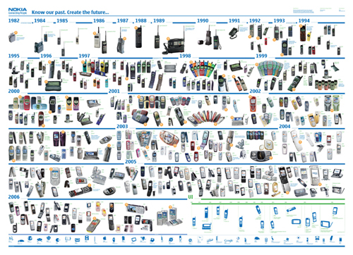
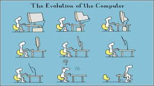
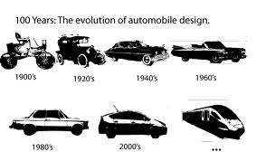

La conception vise à inventer, créer, développer un produit en utilisant des connaissances, des techniques, des outils et des méthodes connues.
La conception d'un produit nouveau est rare. La re-conception des produits existants est un travail permanent visant à :
- la diminution des insatisfactions
- l'amélioration de la valeur
- la prise en compte des progrès techniques
- l'adaptation à de nouveaux besoins
On utilisera des outils adaptes à la démarche de créativité : TRIZ, ASIT, .....
Évolution des téléphones portables

Jusqu'ou ira l'évolution ?

Le design évolue aussi :

Created with the Personal Edition of HelpNDoc: Produce Kindle eBooks easily